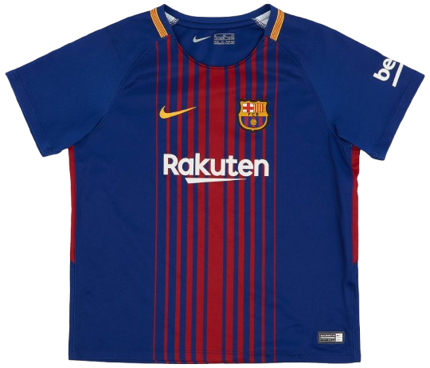
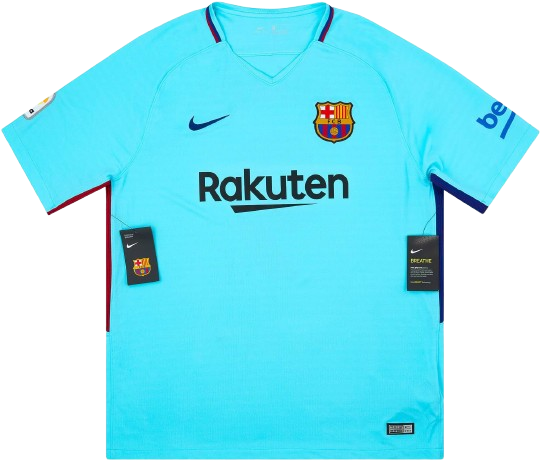
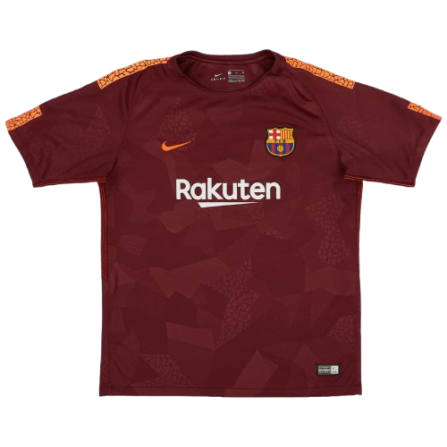

Home Kit

The first Rakuten-era home kit—classic blaugrana with modern striping for a clean, updated look.
The 2017/18 season was a year of domestic dominance and transition for FC Barcelona. It was the first season under new head coach Ernesto Valverde and the first with Rakuten as the club’s main shirt sponsor. The season began with a major shock when star forward Neymar left for Paris Saint-Germain in a world-record transfer, forcing Barcelona to rebuild their attack around Lionel Messi and Luis Suárez. Despite the uncertainty, Barcelona responded with an outstanding domestic campaign, winning both La Liga and the Copa del Rey to complete a domestic double. The team went unbeaten for most of the league season, with Messi leading the team in goals and creativity while new signing Philippe Coutinho joined midway through the season to strengthen the squad. However, their European campaign ended in disappointment when they were dramatically eliminated by AS Roma in the quarterfinals of the UEFA Champions League after a shocking comeback in Rome. Overall, the 2017/18 season is remembered as a year of domestic success and resilience for Barcelona despite major changes and a painful European exit.

The first Rakuten-era home kit—classic blaugrana with modern striping for a clean, updated look.

A bright, icy away kit designed for maximum contrast—minimal, fresh, and instantly recognizable.

A deep-toned third kit with subtle texture—bold, premium, and built to stand out in big matches.